To make my web design responsive I had to learn about responsive grids, images, and media queries. Apart from receiving my knowledge from lectures, I watched tutorials and worked on files from lynda.com and freecodecamp.org
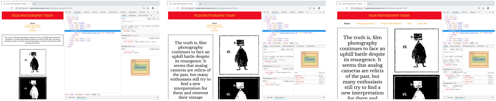 First responsive websiteTheme 01: Basic Web
Thanks to understanding semantic HTML5 elements and CSS3, I was able to develop my first responsive website.
Starting from a website with “mobile first” approach, which gave the valuable insight how to use Brackets, inspect in Developer Tools (Chrome), and upload files using Cyberduck, I was then able to create my first responsive website.
I got acquainted with the process of designing, coming up with an idea, sketching it - to developing the final digital product. Images edited in Photoshop, and graphics sketched in Illustrator were all documented, and then structured as PDF file using InDesign.
An important aspect of the whole work process was to have an understanding of basic color theory, typography, design principles and layouts for the web.
I have learned about the multi-device world of digital media and how important it is to have a well-structured design for different devices. To visualize the design, working with Adobe XD made a huge difference and allowed me to work much more efficiently.
Theme 02: Basic Content
While developing XD Prototype and Micro Site the knowledge gained during the first theme came handy. Especially, the process of coming up with an idea, discussing it in the group, sketching it, and developing the prototype seemed more intuitive. I gained knowledge on development methods, like planning, design, and production of digital media tasks. Keeping in mind how the user will interact with my group simple website, how the content will be displayed and the importance of a mobile-first approach.
Coming up with a storyboard, developing dramaturgy, recording of the sound and mindful editing play a major role for good video production. While working with camera keywords were: golden ratio, composition and what I want to communicate with the image. The importance of understanding those terms and staying humble is crucial at the beginning.
Learn the rules before you break them!
Terms of ISO, aperture and shutter speed are no longer foreign to me. Even though I decided to shot the video using my phone I learned about the Exposure Triangle in case if I wanted to work with the more advanced camera, and have more freedom while creating the final result.
Working in groups can be rough, and it thought me the importance of defining focus point for each group member. Also, coming from different backgrounds, representing different abilities must be treated as an advantage. I understood that seeking help in other group members, is also the part of the process.
Proximity creates a relationship between elements. While developing the prototype visual connection between the elements and placing them in harmony gave the result of consisting looking draft pages in mobile view.
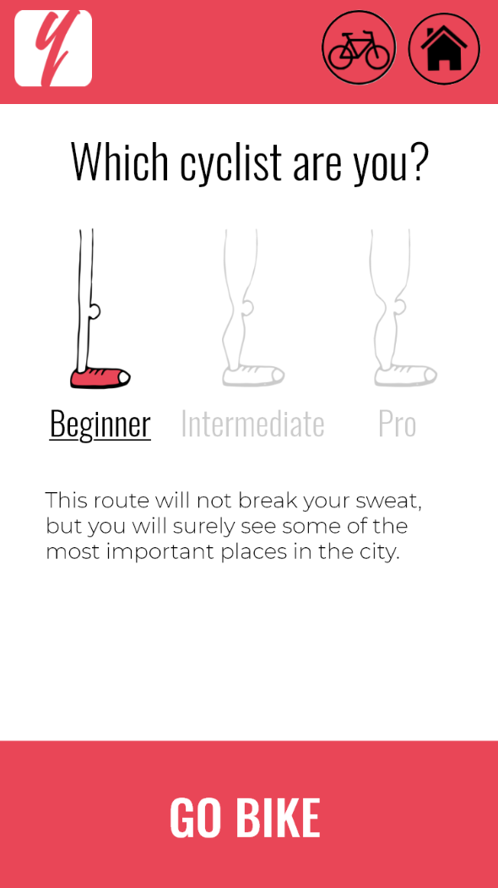 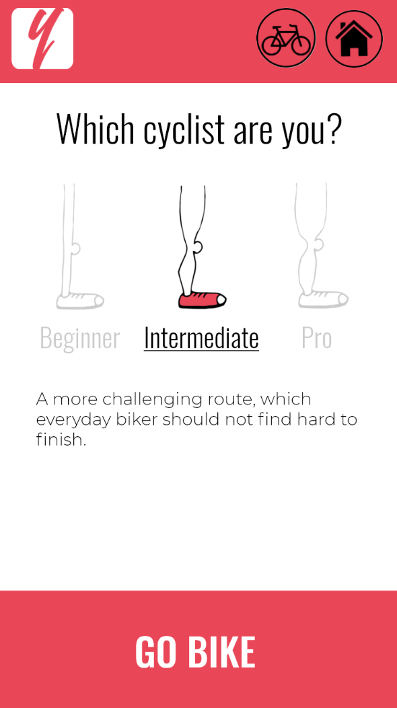 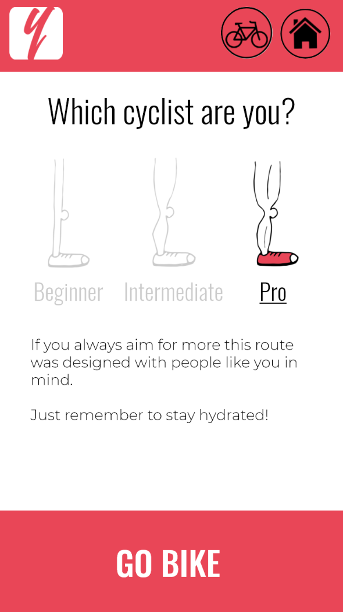Bike Your Way
What makes a good story, so that the viewer can relate to it may seem hard. Following the textbook definition of how to do it, we created an uncomplicated protagonist, antagonist and a conflict. We defined the theme- an emotion we want to convey and shot it while applying composition rules e.g. the rule of thirds.
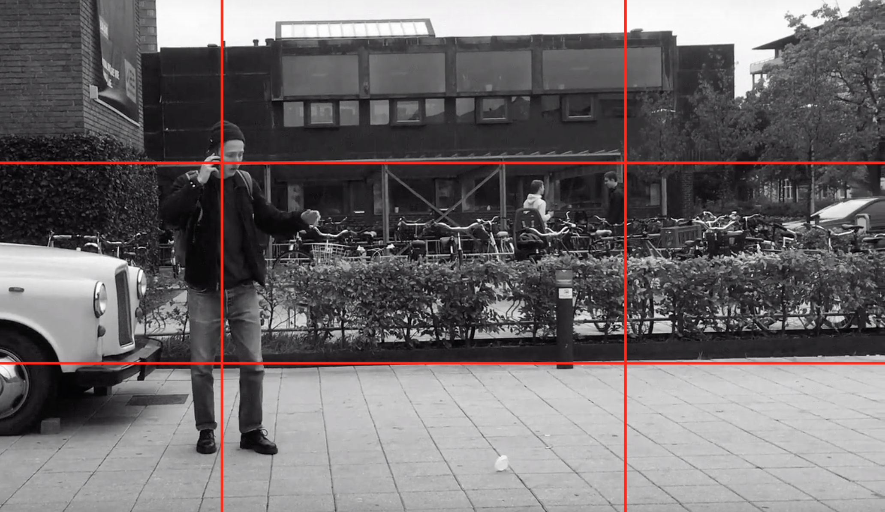BAD
We wrote down the list of all the scenes, including the locations, each action sequence, and the main characters. We took inspiration from 80’s cheesy commercials and styled our footage in this direction in Adobe Premiere Pro and Adobe Audition.
View treatmentView storyboard
We clearly presented all technical documentation, treatment, storyboard, mood-board, style tile, and applied design principles. I learned more about Gestalts laws and composition of the web page. Tests conducted on other peers helped us to create the more visually appealing and user-friendly design of the page.
DocumentationThe microsite is not fully responsive, yet all the other requirements were met. I have learned how to show a video in HTML, using the video element. That the controls attribute adds video controls, like play, pause, and volume. Lastly, that the source element allows you to specify alternative video files which the browser may choose from. The browser will use the first recognized format.
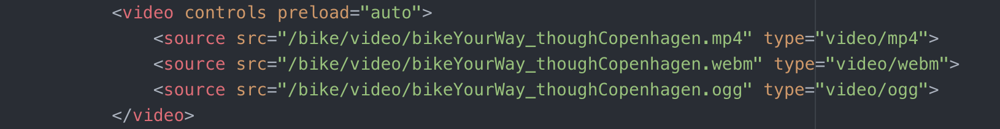PDF with links to a microsite
Theme 03: Basic Animation
The skills in HTML and CSS3 were once again tested and advanced. The biggest step was the addition of CSS Transitions, CSS @keyframes, and CSS Transform. Thanks to working with those syntaxes I learned how to add animated elements to my web pages. One of the biggest challenges in this theme was the understanding and usage of advanced CSS selectors (to get comfortable with it I played the game called flukeout.github.io) and creating the sprite animation.
While creating an interactive animation, I gained more skills in drawing and sketching of graphics using programs like Illustrator and Photoshop. Preparation of storyboard, character sheets and brainstorming upon our project design, once more gave valuable experience while working on group projects.
I enriched my web development skills by learning basic JavaScript. While HTML contains the structure of the page, CSS is used for styling, JavaScript adds interactivity. To get more familiar with it I used a lot of external resources, mainly lynda.com and freecodecamp.org.
I was introduced to GitHub and its features. Before that, if I wanted to share code with my classmates I just copy and pasted the code via mail. Now, I can use my own repository and share the access to it with a unique URL.
After learning the basics of JavaScript, I was able to produce simple animation. I used the querySelector method and saved it in a variable to have a handle to each element. Later, when the chosen button is clicked it triggers an animation. When e.g. walk is clicked it “calls” the function ‘walk’ which use classList.add to add the desired class.
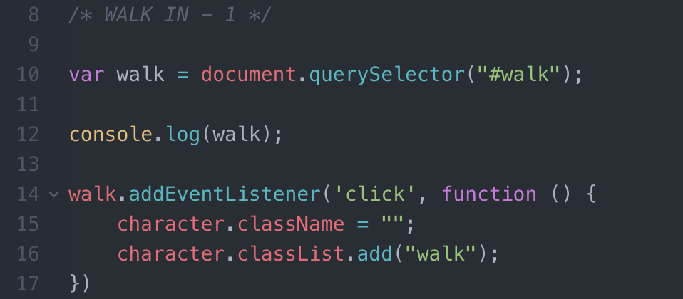Simple animation
While creating a sprite animation I had learned about the usage of layers in Illustrator. Thanks to that knowledge I was able to draw different position of my character on each layer, so I could combine them later into single artboard. It was important to multiply the width of my artboard by the number of frames, to create a smooth animation.
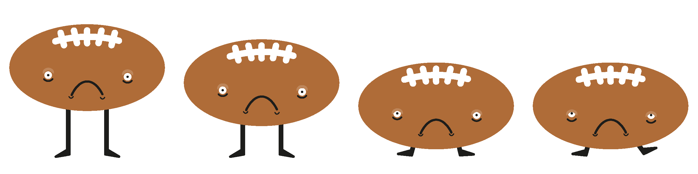PDF with worksheets about the story
To create an interactive animation I had to learn about chaining. When one event finishes, I was able to trigger the next one. In this example, I added (addEventListener) to sound of opening the box so that when it finishes (ended) the vinyl appears (activateImageThree).
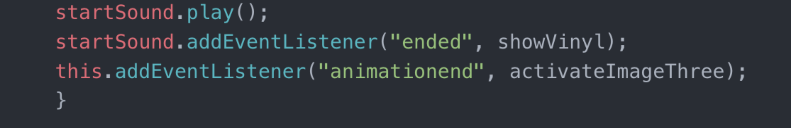Interactive animation "Grandma's Attic"
Conditional statements are used to perform different actions based on different conditions. Thanks to that I was able to create a simple game. I used if condition with the function moveFly for the first click on the insect, and else to specify a block of code to be executed, if the same condition is false, to change the image src to blood stain and play smackSound.
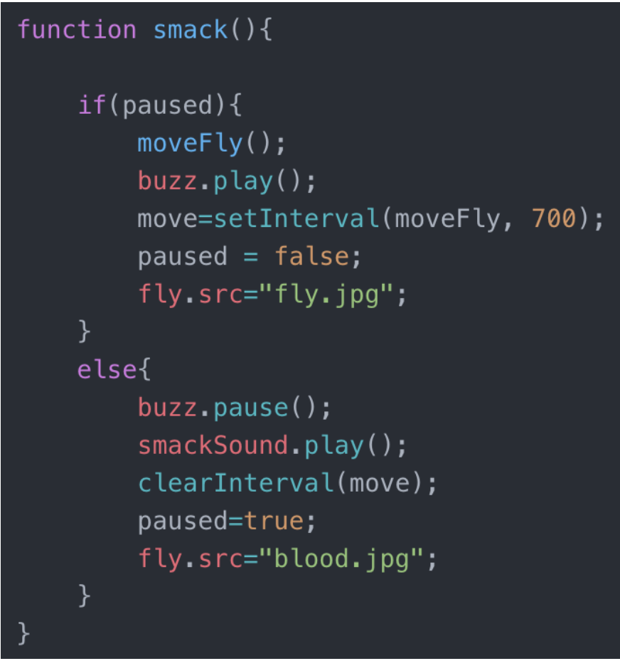Smack the fly
Once again I put conditional statements to use. I used code.info to get the JavaScript event keycode for each key. Then I used if and else if statements (which allowed me to specify a new condition to test if the first condition is false) to play the desired sound when a key is pressed or the button is clicked.
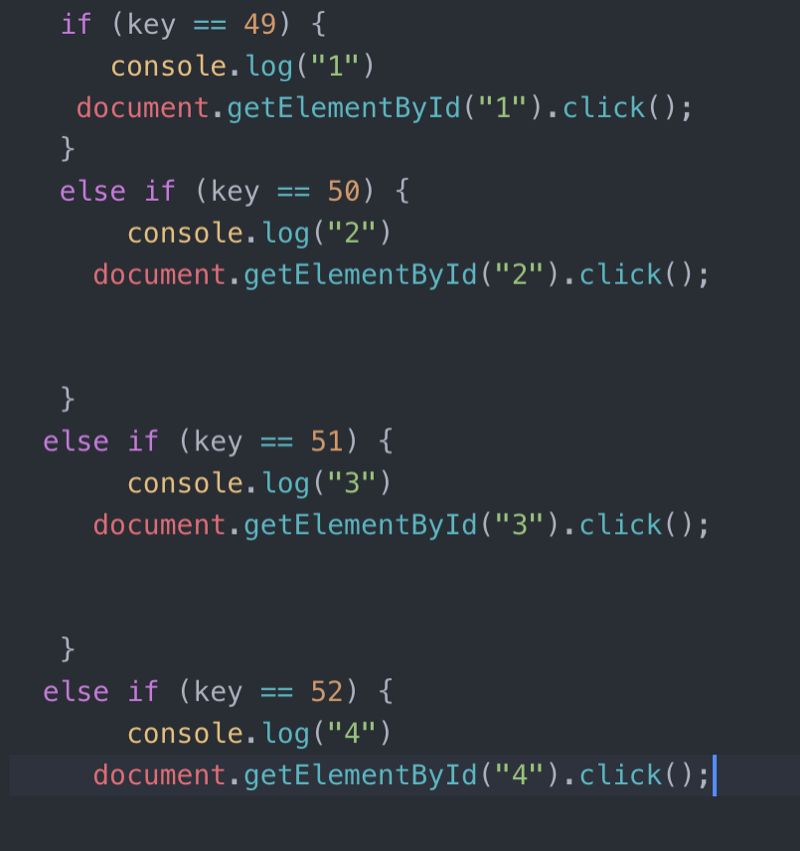Drum machine
While coding final interactive production I used Switch Statement (switch) for the first time. It allowed me to select one of many code blocks to be executed when the boot is clicked on desired number of times (case 1,2,3…). Threw out the whole production I used browser’s developer tools to test (console.log) and experiment with my code.
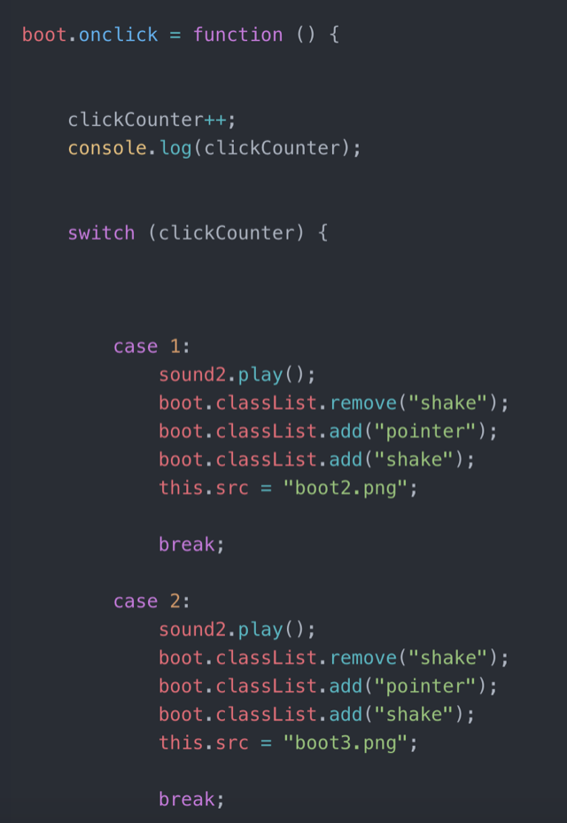Final interactive production "WALL-E"
Screencast helped me to rethink the whole project and focus how to structure documentation and present it neatly organized way. One of the skills I acquired during collecting needed data, was how to perform screen recordings and what documentation forms are used in digital media productions.
Screen cast documentationPDF with documentation
Theme 04: Basic UX
The main point of the theme was a collaboration with a case company that wanted to improve their users’ experience. In this case, the client was KEA (Head of MMD, Frederikke Bender), a platform that needed improvement (Fronter), target audience (students, teachers), objective (improved solution) and a problem (bad UX/UI in existing solution, lack of insight into target audience needs).
We worked using Design Sprint Method which was developed at Google from a vision to grow UX culture and the practice of design leadership across the organization. Thanks to that I acquired practical knowledge on how to build and test a realistic prototype in 5 days.
On Monday, I mapped out the problems and issues which I found on Fronter and picked the most important places to focus, by interviewing target group of company owners. We had to plan and conduct user research, think of our interview technique and our business goals. In our case, we decided upon creating Fronter.Portfolio which would be used by companies to find students to collaborate with. Creating user flow and a focus on the map helped me to visualize what long-term goal we are trying to achieve. Especially as the decider in the group, I had to make all the tough decisions and motivate others to work.
On Tuesday, we had individually sketched competing solutions and decided upon the best ones in the group.
On Wednesday, we had turned our ideas into a testable hypothesis. After picking our favorites we turned the best solutions into the storyboard.
On Thursday, we worked on a high-fidelity prototype using Adobe XD. After redesigning the existing product, we implemented some UI Kits which are the development elements to enhance the user experience of Fronter.
And on Friday, we tested our prototype on potential clients, which was not easy as we picked company owners as our target group.
After deciding upon a point of departure which was our long-term goal, with company owners as targeted audience, I developed a high-fidelity prototype. All the decisions and actions taken during the process of production were based on Design Sprint Method. In that in mind prototype covers “user flow” described in Theme Documentation. 5-second test which I conducted on my fellow students showed me if an opening page of my prototype gave them the idea what the Fronter. Portfolio might be about, and what they expected on pages to follow.
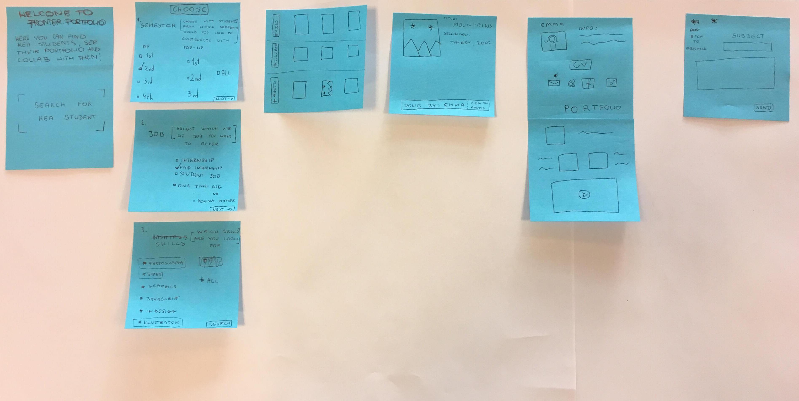XD Prototype
In the Theme 03: Basic Animation we were introduced to Disney’s 12 Animation Principles. One of the themes was a Staging. I implemented it by changing the background color of checked field so that the user would be unmistakably clear which field he had selected. Apart from that, I learned about new input types in HTML, such as checkboxes. Which allows the user to select one or more options for a limited number of choices.
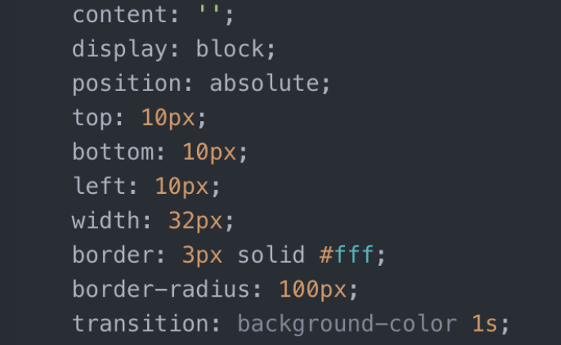 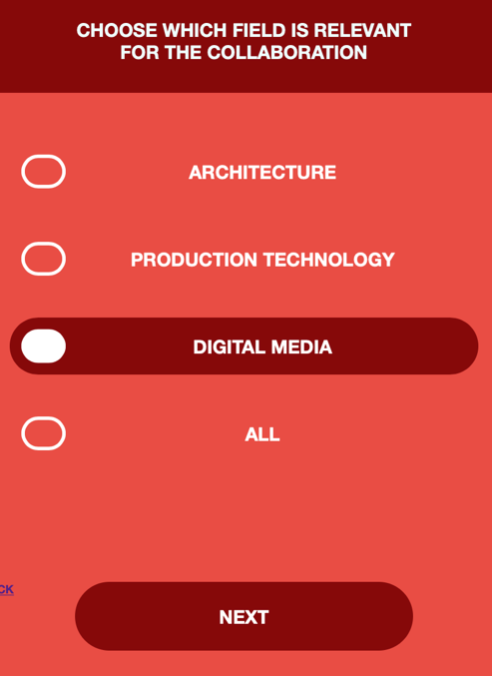 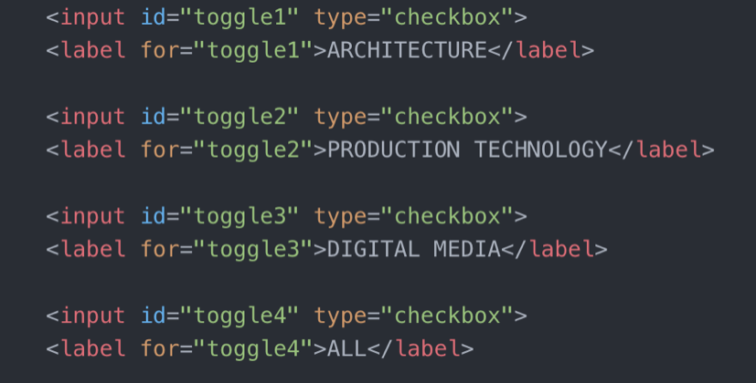Web Prototype
GitHub Repository
Based on the knowledge gained during Design Sprint week, together with the team, we were able to develop a native app very ably and stepwise. We decided upon a native app for iOS and I learned about UI kits and how helpful they can be while designing and developing user interfaces, and how I can implement them to create a concise looking prototype to pitch and present to the client. I used complementary colors covered in the Theme 01: Basic Web. Color scheme corresponded with the name - “BUTTER”, and I downloaded it using color.adobe.com.
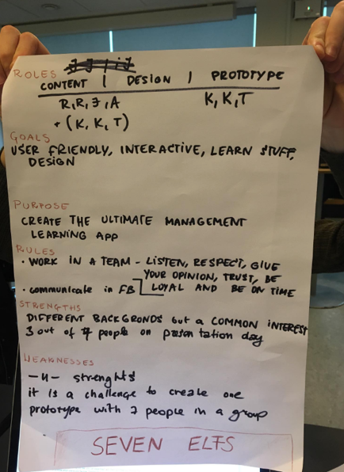
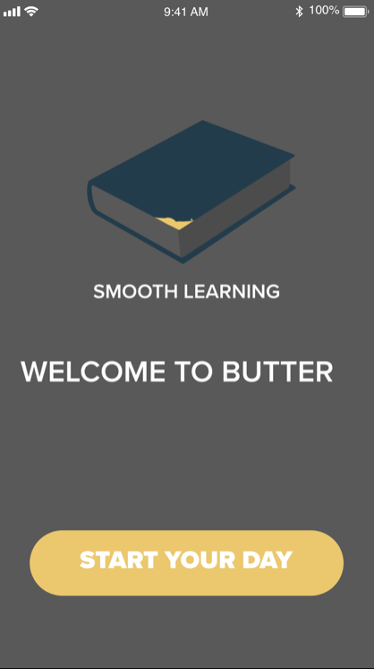
XD Prototype
XD Prototype
Concise documentation allowed me to keep track of my work process and files. I learned how to collect insights from users research in a design process and convert them into concrete solutions. One of the skills I acquired during work on the theme was understanding the user behavior via the user journey. Well-drafted user journey can help to work out how users are going to interact with the system and what they expect from it. Considering business aspect, demonstrating the vision for the future project – user journeys are a great way to communicate what you are trying to achieve with stakeholders.
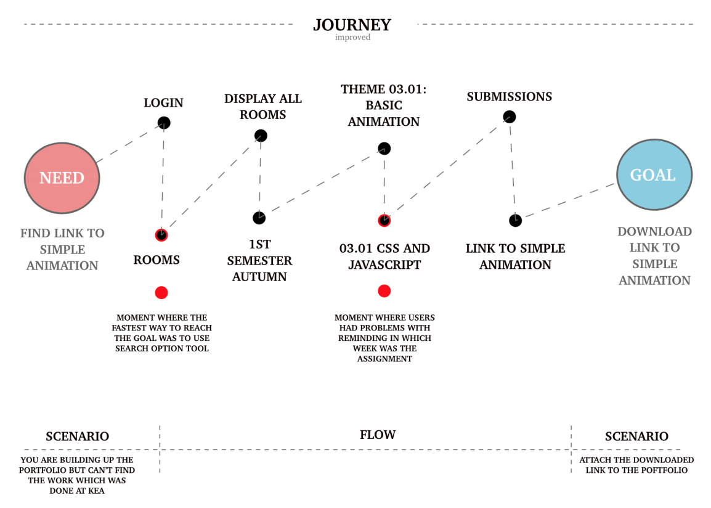PDF with Theme documentation